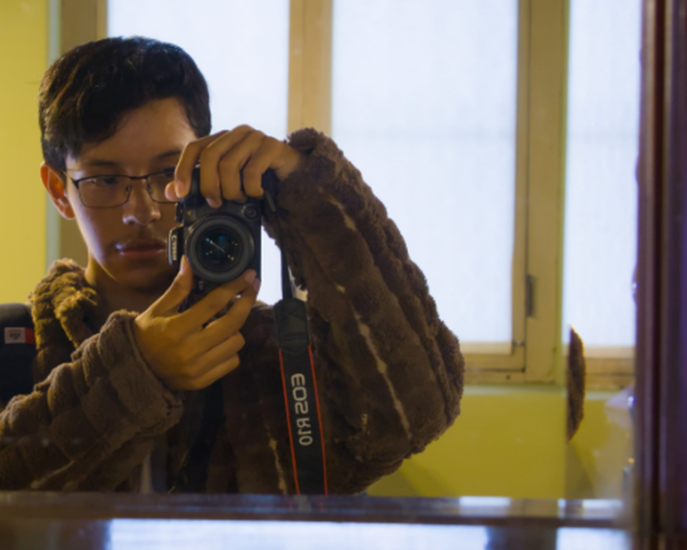
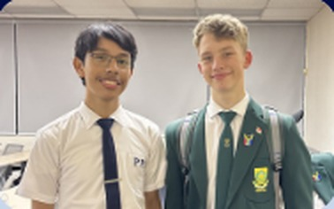
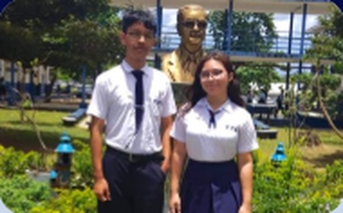
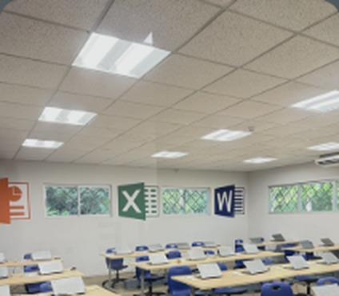
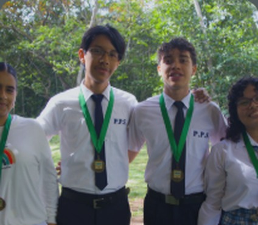
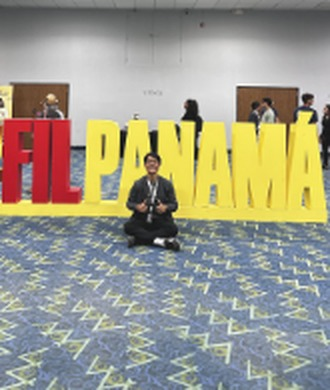
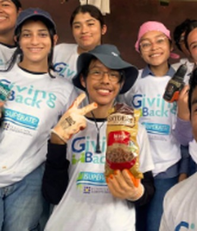
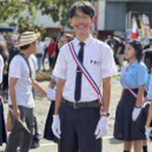
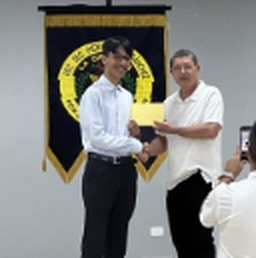

Hola,
soy Yohel.
Un líder no es el que te dice qué hacer, sino al que le preguntas cómo lo haría.
Estudiante, orador, voluntario y fotógrafo en La Chorrera, Panamá.

Siempre tomo la foto, pero casi nunca salgo en ella.
Creo que las fotos guardan la belleza de un momento para poder vivirlo otra vez. Esa es mi razón de fotografiar.
Para mí, la fotografía es mi manera de ver lo que otros no ven, incluso en lo cotidiano. Con mi cámara y mi lente capturo cada lugar al que voy: el arte de contemplar.
Toca o pasa el cursor sobre una foto para revelarla a color. Haz clic para verla grande.
- Cámara
- Canon EOS R10
- Sujeto favorito
- Cualquier cosa que muestre una emoción
- Música
- Indie pop, casi siempre en inglés
- Lecturas
- Realismo mágico: Cien años de soledad, El amor en los tiempos del cólera
- Colecciona
- Billetes de un dólar y, de paso, analiza placas de autos
- Para comer
- Sushi, ropa vieja, patacones y hojaldres
- Destino soñado
- El extremo sureste de Costa Rica
Mi historia, cuadro por cuadro
Desliza el rollo hacia los lados.
-
Hace 7 años
Llegué a La Chorrera. Una escuela nueva me obligó a cambiar y a adaptarme a un lugar que todavía no conocía.
1 -
La pandemia
Todo cambió. Crecí, hice nuevos amigos y empezó la secundaria. Ahí descubrí que me encanta salir y llegar a donde pueda.
2 -
2025
Debatí en los Campeonatos de Debate Work-School y participé en la Feria Internacional del Libro con la Alianza Francesa Panamá.
3 -
Marzo 2026
Construí viviendas dignas para familias en situación de pobreza junto a TECHO Panamá.
4 -
Abril 2026
Gané por voto popular la representación estudiantil de mi escuela.
5 -
El siguiente cuadro
Clasificar al Concurso Nacional de Oratoria, terminar la universidad y seguir aprendiendo en el camino.
6
Trayectoria académica
Concursos, debates y proyectos de ciencia me enseñaron que las ideas están en todas partes: solo hay que volverlas reales.
-
Concursos de oratoria y discurso
Presentaciones sobre temas muy distintos, en inglés y en español. Mi próxima meta es clasificar al Concurso Nacional de Oratoria.
-

Torneos de debate
Campeonatos de Debate Work-School 2025, donde practiqué el pensamiento crítico y la toma de decisiones.
-

Representante estudiantil
En abril de 2026 gané por elección popular los votos para representar a mi escuela. Es la prueba de que otros confían en mí.
Habilidades técnicas


Idiomas
- Español
- Inglés
- Portugués en proceso
- Italiano en proceso
Impacto social y voluntariado
Ayudar por una buena causa nunca es energía perdida.


Mis valores y pasatiempos
-

Liderazgo -

Excelencia - Viajar
- Fotografía
Siempre trato de recordar que hay un momento para todo, incluso para no hacer nada.
Información de contacto
Fin del rollo. Cuadro 36 de 36.